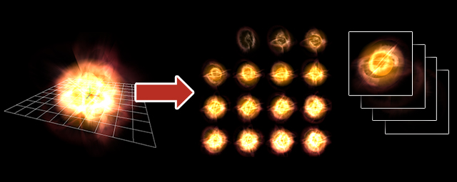
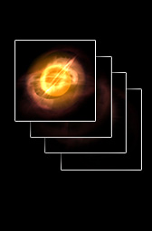
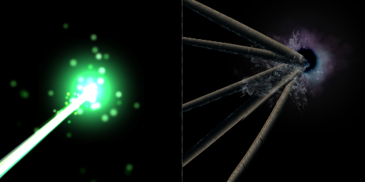
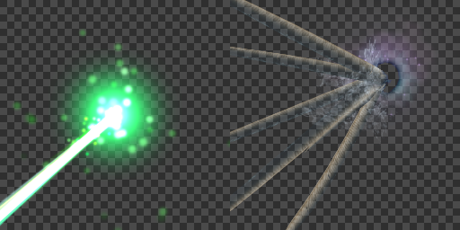
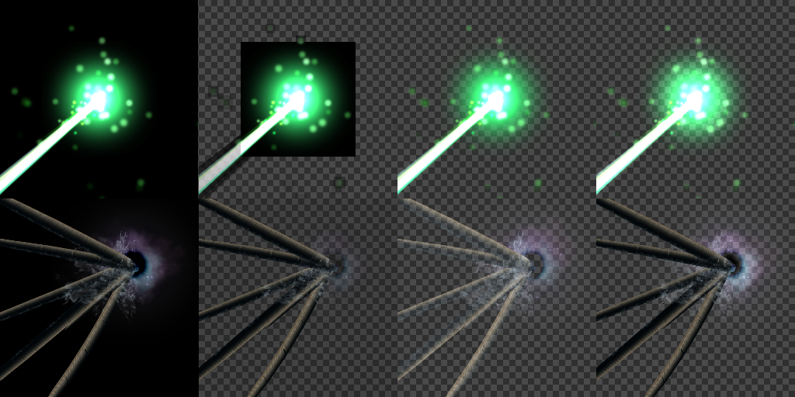

录像¶
概述¶
允许你将特效输出为精灵表单（Sprite Sheet）、gif动画、AVI等。可用于将特效发布到Twitter/博客/网站/其他场合，或者你无法通过运行时播放Effekseer制作的特效的情况。
|  |  |
参数¶
分辨率¶
宽度/高度¶
设置动画每帧的输出尺寸。
缩放¶
录像区域相对于实际的屏幕放大。 例如，如果宽度和高度是256，且缩放为2，也就是在256的区域中以两倍的缩放比率录像，输出分辨率为512的图片。
显示向导¶
勾选时，录像区域的边界会在屏幕上显示。向导区域内的一切都会被录像，区域之外的东西会被裁剪掉。
导出的帧¶
开始帧¶
设置从第几帧开始录像。
结束帧¶
设置从第几帧结束录像。
频率（帧）¶
设置每几帧输出一帧。例如，值为1时，录像60帧，输出60张图。值为2时，录像60帧，只会输出30张图（隔帧输出）。提高这一项的值，输出的文件尺寸会变小，但动画会变得不连贯。
格式¶
有5个选项：“导出为单张图片”、“导出为连续多张图片”、“导出为gif动画”、“导出为AVI”和“导出为mp4(h264)”。
“导出为单张图片”将生成一幅由多个帧组成的图像。这些帧从左上到右下排列，水平方向上的帧数为“X轴方向帧数”设置的帧数。因此，竖直方向上的帧数将会是帧的总数/X轴方向帧数。
“导出为连续多张图片”将每帧输出为独立的文件，文件名带有编号。
“导出为gif动画”将录制的特效输出为gif文件。
“导出为AVI”将录制的特效输出为带alpha通道的未压缩的动画文件。
“导出为mp4(h264)”将录制的特效输出为mp4文件。
| 导出为单张图片 | 导出为连续多张图片 | 导出为gif动画 |
 |  | |
选项¶
透明¶
设置如何处理背景，gif动画除外。
无¶
将背景设置为黑色。

生成alpha¶
自动生成alpha通道。 如果使用了深色且混合方法为混合的图片，有时候会生成错误的图像。
生成alpha(Blend+Add)¶
通过分别输出混合方法为混合和叠加的结果， 可以在可能的范围内再现背景变化时的颜色。 它还可以记录包含混合和叠加粒子的特效。

使用时，先将混合图像混合到背景上，再将叠加图像叠加到背景上。

方法间的对比¶
从左到右分别是“无”、“使用原始图片”、“生成alpha”和“生成alpha(Blend+Add)”的显示效果。
设置的保存位置¶
将录像的设置保存在应用，还是每个项目分别保存。